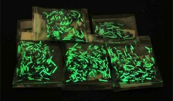

|
Rádio |

Utilizações:
-Já foi usado no tratamento de câncer de próstata (principalmente em caso de espalhamento do câncer para os ossos)
-Foi utilizado no passado como constituinte em tintas que brilham no escuro (atualmente este uso não é permitido por causa de sua elevada radioatividade
-Como fonte de nêutrons
-Antigamente, chegou a ser usado em vários produtos domésticos. Como,por exemplo, em cremes para o cabelo, pois acreditavam que a radioatividade poderia ter propriedades curativas. No entanto, os riscos superam muito qualquer tipo de eventual benefício
-Em alguns tipos específicos de radiografia industrial (principalmente para verificar falhas em peças metálicas)
O rádio é um elemento natural.
 -Radioativo
-Radioativo